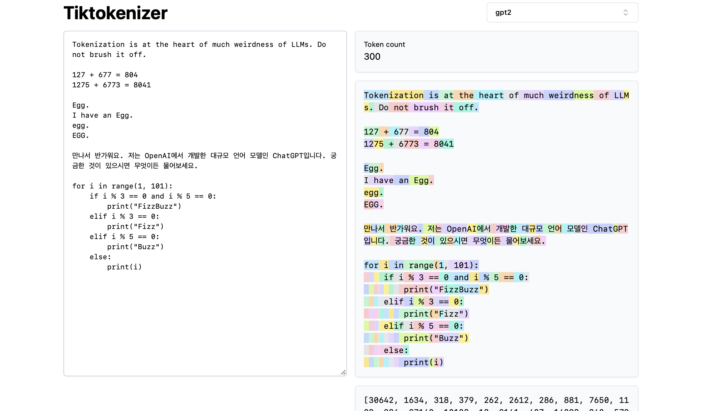
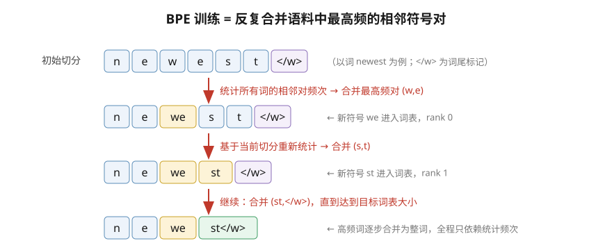
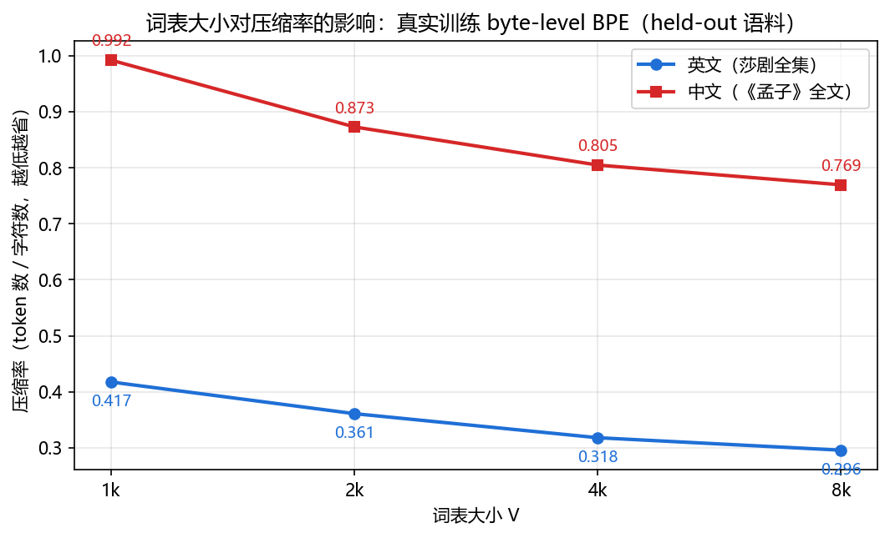
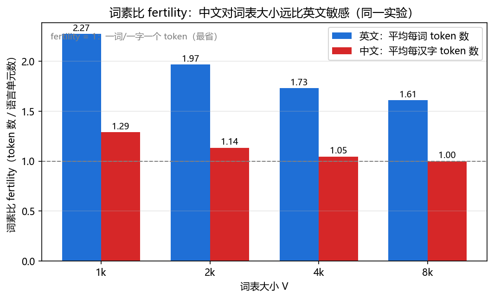

第 4 章 分词器：BPE 与现代分词算法¶
本章导读：你大概见过 GPT 数不清 "strawberry" 里有两个 r 的翻车现场，也见过手机 输入法永远联想不出昨天刚诞生的新梗——这两件事是同一个原因：模型和词库都只认识 "训练时定死的单元"。大模型读到的从来不是字母或汉字，而是 token id；切分方式直接 决定模型的成本（序列长度）、能力边界（OOV）与多语言公平性。本章从这两个生活场景 出发，完整推导字节对编码（BPE）的训练与推理算法并逐行手算复现，再给出约 90 行的 从零实现，与 OpenAI 官方源码逐行对账；随后覆盖 Byte-level BPE、WordPiece、Unigram 与 SentencePiece，讨论特殊 token、chat template 与词表大小的工程权衡。读完你将能 从零实现并解释三个高频问题："为什么中文更贵"、"为什么数不清字母"、"为什么换对话 模板效果骤降"。
预计阅读时间：65 分钟（含动手环节 25 分钟）。前置：第 1 章（全景图）；token id 如何被模型消费，见 第 5 章 与 第 6 章。
4.1 问题先行：为什么 GPT 数不清 "strawberry" 里有几个 r¶
第 3 章把"预测下一个 token 的机器"的积木配齐了，但流水线的第一环一直没问： 模型吃的 token 从哪来？先把两个现象摆在一起看：
- 现象一（模型的）：让早期 GPT-4 数 "strawberry" 有几个
r，它会自信地答 2 或 3。 - 现象二（输入法的）：手机输入法能联想"人工智能"，却联想不出上周刚火起来的新梗。
共同根因：双方的"感知单元"都不是字符，而是训练时定死的更大单元。输入法的词库 里没有新梗，联想无从谈起；而 GPT 眼中的 "strawberry" 根本不是一个字母串——用 tiktoken 实测（4.5 节代码可复现）：
"strawberry" → ['st', 'raw', 'berry'] （GPT-2 与 GPT-4o 词表均如此）
覆盖区间 → st:[0,2) raw:[2,5) berry:[5,10)
三个字母 r 分别藏在 raw（1 个）和 berry（2 个）内部，从未作为独立单元出现。
"数字母"对模型是一个逆分词任务：先要把 token 拆回字符，才能数——这与"人类默读
时按词读、问第几个字母要放慢拼读"是同构的困难。它无关智力，而是感知粒度问题；
后续模型靠思维链"先拼写出 s-t-r-a-w-b-e-r-r-y 再数"绕过了它，恰恰反证了瓶颈在
输入表示。
分词器（Tokenizer） 就是从文本到整数序列的确定性映射 \(\text{text} \to [t_1,\dots,t_T]\)，在训练开始前于语料上"学习"出来，随后固定不变—— 它不可微，也不随模型一起更新。词表（vocabulary）\(V\) 是全部合法 token 的集合，典型 规模 3 万–25 万。它决定三件事：
- 成本：token 数 = 计算量与费用（API 按 token 计价），也决定有效上下文长度；
- 能力边界：词表外的单元如何兜底（OOV 问题）；
- 多语言公平：同样一段话，中文比英文多花多少 token。
三种切分粒度的权衡：
| 维度 | 词级（word） | 字符级（char） | 子词级（subword） |
|---|---|---|---|
| 词表规模 | 数十万甚至百万 | 极小（数百） | 适中（3 万–25 万） |
| OOV（未登录词） | 严重，需 <unk> 兜底 |
几乎没有 | 无 OOV（字节级保证，见 4.8） |
| 序列长度 | 短 | 极长（约 3–6 倍） | 适中 |
| 单 token 语义密度 | 高 | 低（学的是拼写） | 高：常用词整词，罕见词切碎 |
| 形态丰富语言（德/土/芬） | 词形爆炸 | 可行但序列太长 | 天然契合：词干 + 词缀 |
| 代表 | 早期 NMT | ByT5、char-RNN | GPT / LLaMA / Qwen 全系 |
形态丰富语言（morphologically rich languages）中，芬兰语一个词干可有几十种屈折
形式，词级词表要么爆炸、要么大量 OOV。子词把 unbelievably 切成 un + believ + ably
这样的"词根/词缀"，用有限词表组合出无限词形——这正是 BPE 用于 NMT 的原始动机
（Sennrich et al., 2016）。
中文的特例：中文没有空格、单字本身就是语素，"词"边界模糊，因此字符级对中文 意外地合理。但单字 token 语义偏碎（"蝴""蝶"分开），且在字节级词表下每个汉字占 3 个 UTF-8 字节：词表小时一个汉字要 2–3 个 token，成本是英文的数倍（4.5 节 实验与图 3/图 4 实测）。现代中文友好模型（Qwen、GLM）用 15 万+ 大词表把常用词/词组收进词表来压成本。
先"眼见为实"：下面的截图是 Karpathy 在 minbpe 仓库中使用的 tiktokenizer 在线工具， 同一屏里英文常用词是单个 token，数字被切碎，韩文几乎逐字节——不同语言/文本类型的 成本差异一眼可见，这正是本章要量化的核心成本问题。

图 1：tiktokenizer 对中/韩/英/代码混合文本的 GPT-2 切分可视化（右侧彩色块即 token 边界）——英文常用词整词、韩文近乎逐字节、数字与标点被切碎，"每 token 成本"因语言而异。（图源：karpathy/minbpe 仓库，https://github.com/karpathy/minbpe；仅作教学用途，版权归原作者）
Note
分词器与模型分开训练：换分词器等于换输入分布，必须重训模型。这就是词表大小 是架构级超参数而非训练细节的原因（4.10 节）。
4.2 最小可运行例子：30 行摸到 BPE¶
不需要 GPU、不需要 PyTorch，30 行标准库代码就能摸到 BPE 的全部灵魂：反复合并语料 中最高频的相邻符号对。（本章算法均为纯字符串统计，PyTorch 从下一章才登场。）
# mini_bpe.py —— 30 行摸到 BPE：统计最高频相邻对并合并（仅标准库）
from collections import Counter
corpus = "low low low lower lower newest newest newest newest widest widest"
words = Counter(corpus.split()) # 词频表
splits = {w: list(w) + ["</w>"] for w in words} # 初始切分：单字符 + 词尾标记
for step in range(7): # 做 7 次合并
pairs = Counter() # 统计词内相邻对（按词频加权）
for w, freq in words.items():
for a, b in zip(splits[w], splits[w][1:]):
pairs[(a, b)] += freq
best = max(pairs, key=pairs.get) # 最高频对
for w in splits: # 在全部词上执行合并
out, i, syms = [], 0, splits[w]
while i < len(syms):
if i + 1 < len(syms) and (syms[i], syms[i + 1]) == best:
out.append(syms[i] + syms[i + 1]); i += 2
else:
out.append(syms[i]); i += 1
splits[w] = out
print(f"step {step}: 合并 {best}")
print(splits["newest"]) # ['newest</w>'] —— 高频词 7 步后合并成了整词
print(splits["widest"]) # ['w', 'i', 'd', 'e', 'st</w>'] —— 低频词仍是碎片
最后两行输出已经预告了 BPE 的全部行为：高频词被合并成整词（省 token），低频词被 切成碎片（靠词表组合表达）。接下来把这个直觉升级成精确算法。
4.3 BPE 训练算法完整版¶
BPE 最初是 1994 年的数据压缩算法：把文本里最常见的字节对替换成一个新符号，迭代压缩。 Sennrich 等人 2016 年把它搬进 NMT 后思想未变，只是"字节"换成了"词内符号"—— 哪些子串值得成为 token，这个决策完全交给数据统计，而不是语言学规则。
4.3.1 训练流程与伪代码¶
输入语料 \(C\)、目标合并次数 \(k\)（最终词表 = 初始符号数 \(+k\)）：
算法：BPE 训练
输入：语料 C，合并次数 k
输出：合并规则表 R（rank 0..k-1，越小优先级越高），词表 Vocab
1: 预切分（pre-tokenize）：把 C 切成词，统计词频 word_freq
2: 初始符号：每个词拆成单字符 + 词尾标记 </w>，得到初始切分 S
3: for step = 0 .. k-1:
4: P ← 统计所有词内相邻符号对 (a,b) 的加权频次（权重 = 词频）
5: (a*, b*) ← argmax P（并列时按确定性规则打破：本章实现取该轮统计中
先被记录的对，即语料扫描顺序）
6: 对每个词 w ∈ S：把 (a*, b*) 从左到右、不回溯地合并为新符号 a*b*
7: R[step] ← (a*, b*)；Vocab ← Vocab ∪ {a*b*}
8: return R, Vocab
逐项拆解这份伪代码里每个"从哪来"：
- 词频 word_freq（第 1 行）：不是必需品而是加速器——BPE 只关心"对"出现了多少 次，把同一词的重复压成一个权重，统计量从字符总数级降到词种数级；
- 词尾标记
</w>（第 2 行）：区分同一子串出现在词尾还是词中（est</w>vsest+ion）。没有它，BPE 会把词中/词尾的同形子串混为一谈，产生语义劣质的切分； - 加权频次（第 4 行）：权重必须是词频而非 1，否则一个只出现一次的词里的对与 出现一千次的词里的对同权，统计失效；
- argmax 的确定性（第 5 行）：并列时必须定死打破规则（本章取"先被记录的对"）。 并列在真实语料里极常见，规则不定，训练结果不可复现。
下面的示意图把"统计—合并—入表"的循环压缩成一屏，建议先看图建立动态过程的感觉， 再对照 4.3.2 的手算表逐步核对。

图 2：BPE 训练循环：每轮基于当前切分统计词内相邻对频次，把最高频对合并为新符号并写入词表（rank 递增），高频词逐步合并为整词。
4.3.2 手算示例：7 步合并全过程¶
语料（故意含重复模式）：
low low low lower lower newest newest newest newest widest widest
词频：low=3, lower=2, newest=4, widest=2
初始切分与初始相邻对频次（按词频加权）：\((l,o)=5\)、\((o,w)=5\)、\((w,e)=6\)（lower 2 次 + newest 4 次）、\((e,s)=6\)、\((s,t)=6\)、\((t,\text{</w>})=6\)、\((e,w)=4\)、\((n,e)=4\)、其余 \(\le 3\)。 最高频 6 有四个并列，按"该轮统计中先被记录"规则取 \((w,e)\)（扫描到 lower 时先加入统计）。
逐步合并（每步只列出发生变化的词）：
| 步 | 最高频对（频次） | 新符号 | 变化后的切分 |
|---|---|---|---|
| 0 | \((w,e)=6\) | we |
lower→l o we r </w>；newest→n e we s t </w> |
| 1 | \((s,t)=6\) | st |
newest→n e we st </w>；widest→w i d e st </w> |
| 2 | \((st,\text{</w>})=6\) | st</w> |
newest→n e we st</w>；widest→w i d e st</w> |
| 3 | \((l,o)=5\) | lo |
low→lo w </w>；lower→lo we r </w> |
| 4 | \((n,e)=4\) | ne |
newest→ne we st</w> |
| 5 | \((ne,we)=4\) | newe |
newest→newe st</w> |
| 6 | \((newe,st\text{</w>})=4\) | newest</w> |
newest→newest</w>（整词入表） |
7 步后的合并规则表（rank 越小越优先合并）：
最终切分：low → lo|w|</w>，lower → lo|we|r|</w>，newest → newest</w>，
widest → w|i|d|e|st</w>。词表 = 11 个初始符号（10 字母 + </w>）+ 7 个合并符号 = 18。
手算的两个关键点
① 第 1 步后 newest 的 \((e,s)\) 变成了 \((we,s)\)——统计必须基于当前切分重算；
② 第 2 步后 \((t,\text{</w>})\) 消失（被 st</w> 吸收），高频对是动态变化的。
建议先自己推一遍，再用 4.5 节代码逐行对照。
4.3.3 编码（推理）算法¶
训练得到的是规则表；对任意新词，按优先级贪心合并：
算法：BPE 编码（推理）
1: syms ← 新词拆成单字符 + </w>
2: loop:
3: 在 syms 的所有相邻对中，找出 rank 最小且存在于 R 的对 (a,b)
4: 若不存在 → break
5: syms ← 合并 (a,b)
6: return syms
编码语料外的词 lowest：l o w e s t </w> \(\xrightarrow{\text{rank0}}\) l o we s t </w>
\(\xrightarrow{\text{rank1}}\) l o we st </w> \(\xrightarrow{\text{rank2}}\) l o we st</w>
\(\xrightarrow{\text{rank3}}\) lo | we | st</w>（再无可应用规则）——语料外的词被已学
子词"拼"了出来，这正是子词模型能泛化到新词的机制。同时注意合并出的 newe（第 5 步）
是纯频率产物、与词源无关：BPE 只看统计不看语义，罕见词可能被切成语义无关的碎片
（4.7 节 Unigram 的改进动机之一）。
4.3.4 编码复杂度与性能¶
把账算清楚，选型时才知道自己买的是什么：
训练复杂度。朴素实现每步全量扫描当前切分（\(S\) 为语料符号总数）重数所有对，\(k\) 步 共 \(\mathcal{O}(kS)\)——GB 级语料上不可行。工程做法是增量更新：合并 \((a^*,b^*)\) 只 影响词表中 \(a^*\) 或 \(b^*\) 出现位置附近的对，维护"对 → 出现位置集合"的倒排索引，每步 只重数受影响的少量对；HF tokenizers 的 Rust 训练器即此类实现，GB 级语料分钟级完成。
编码复杂度。对单词长 \(L\)：每轮扫描找最小 rank 对是 \(\mathcal{O}(L)\)，最多合并 \(L-1\) 次，朴素为 \(\mathcal{O}(L^2)\)——但词很短（预切分后通常 \(L\le 20\)），常数极小； 工程实现用优先队列把"候选对"组织起来，近似 \(\mathcal{O}(L\log L)\)。
并行性。预切分之后各词的编码互相独立——这是分词器能被 Rust/多核加速到极限的 结构原因：tiktoken 按预切分单元切开后并行编码、HF fast tokenizer 同理。
实测吞吐：
| 实现 | 路径 | 吞吐（M token/s） | 说明 |
|---|---|---|---|
tiktoken gpt2 |
Rust + 多核并行 | 约 5.0 | 50 万字符 30 ms 编码完毕 |
| HF tokenizers BPE-8k | Rust，但逐行 Python 循环 | 约 0.8 | 含 Python 侧循环开销 |
| 本章 90 行纯 Python 实现 | 单线程标准库 | 约 0.02 量级 | 教学用，别用于生产 |
实战提示
训练大语料前先做预切分一致性检查：训练与推理用同一套 pre-tokenizer，否则 训练学到的合并规则在新切分上可能根本无法触发。生产编码用 tiktoken / HF fast tokenizer；纯 Python 实现的价值是让你看懂它们在做什么。
4.4 从零实现 BPE（约 90 行，训练 + 编码 + 解码）¶
把 4.2 的骨架补全成完整组件：训练产出规则表与词表，编码按 rank 贪心合并，解码把 token 串拼回文本。这段代码可以原样跑通并复现 4.3.2 的手算结果：
# bpe_from_scratch.py —— 词级 BPE：训练 + 编码 + 解码（仅标准库）
# 运行：python bpe_from_scratch.py
from collections import Counter
END = "</w>" # 词尾标记：区分词中/词尾的同形子串
class BPETokenizer:
"""教科书式 BPE（Sennrich 2016 的词级版本）。"""
# ---------------- 训练 ----------------
def train(self, word_freqs: dict, num_merges: int):
# 1. 初始符号集：每个词拆成单字符 + 词尾标记
self.splits = {w: list(w) + [END] for w in word_freqs}
self.merges = {} # (a, b) -> rank（越小优先级越高）
for step in range(num_merges):
# 2. 统计所有词内相邻符号对的加权频次
pairs = Counter()
for w, freq in word_freqs.items():
for a, b in zip(self.splits[w], self.splits[w][1:]):
pairs[(a, b)] += freq
# 3. 选最高频对（dict 保序：并列时取语料中先出现的对）
best = max(pairs, key=pairs.get)
# 4. 在全部词上执行合并
for w in self.splits:
self.splits[w] = self._merge_word(self.splits[w], best)
self.merges[best] = step
self._build_vocab()
@staticmethod
def _merge_word(syms, pair):
"""从左到右、不回溯地合并相邻的 pair。"""
a, b = pair
out, i = [], 0
while i < len(syms):
if i + 1 < len(syms) and syms[i] == a and syms[i + 1] == b:
out.append(a + b) # 合并成新符号
i += 2
else:
out.append(syms[i]); i += 1
return out
# ---------------- 编码（推理） ----------------
def encode(self, text: str):
"""按合并优先级贪心切分：每轮找 rank 最小且在当前切分中出现的对。"""
tokens = []
for w in text.split(): # 极简预切分：按空格
syms = list(w) + [END]
while len(syms) > 1:
cand = [(self.merges[p], i)
for i, p in enumerate(zip(syms, syms[1:]))
if p in self.merges]
if not cand:
break
_, i = min(cand) # rank 全局唯一，min 结果确定
syms = self._merge_word(syms, (syms[i], syms[i + 1]))
tokens.extend(syms)
return tokens
def encode_ids(self, text: str):
return [self.stoi[t] for t in self.encode(text)]
# ---------------- 解码 ----------------
def decode(self, tokens) -> str:
return "".join(tokens).replace(END, " ").strip()
def _build_vocab(self):
vocab = {c for ab in self.merges for c in (*ab, ab[0] + ab[1])} | {END}
self.itos = sorted(vocab)
self.stoi = {s: i for i, s in enumerate(self.itos)}
if __name__ == "__main__":
corpus = "low low low lower lower newest newest newest newest widest widest"
tok = BPETokenizer()
tok.train(dict(Counter(corpus.split())), num_merges=7)
print(tok.merges) # 复现 4.3.2 节手算表：
# {('w','e'):0, ('s','t'):1, ('st','</w>'):2, ('l','o'):3,
# ('n','e'):4, ('ne','we'):5, ('newe','st</w>'):6}
print(tok.splits["newest"]) # ['newest</w>'] —— 7 步后整词合并
print(tok.encode("lowest")) # ['lo', 'we', 'st</w>'] —— 语料外词由已学子词拼出
print(tok.encode_ids("lowest"))
print(tok.decode(tok.encode("low newest"))) # 'low newest'
实现要点逐条对应 4.3 的算法项：
train第 3 步的max(pairs, key=pairs.get)依赖 dict/Counter 的插入序（Python 3.7+ 保证）：并列时取先被记录的对——伪代码第 5 行确定性规则的落地；encode的min(cand)利用 rank 全局唯一：不存在同 rank 的两对，结果确定；_build_vocab把"初始符号 + 合并符号"打包成词表——注意规则表与词表是两个状态， 保存 tokenizer 时都要存（GPT-2 用vocab.bpe+encoder.json两个文件分别存它们）。
4.5 实验与插图：训练真实 BPE，量化"中文为什么贵"¶
现在用生产级实现（HF tokenizers，Rust）在真实语料上训练不同词表大小的 BPE， 把本章开头"中文更贵"的断言变成可测量的两条曲线。
实验设置：语料为公有领域文本——英文用莎剧全集（约 111 万字符），中文用《孟子》全文（约 4.8 万 字符，繁体转简体）；各取前 80% 训练、后 20% 做 held-out 评测；用 byte-level BPE 分别 以 \(V \in \{1000, 2000, 4000, 8000\}\) 真实训练 8 个分词器，测两个指标：
压缩率（CR）的分母是字符数（回答"每字符多少钱"），fertility 的分母是语言单元数 （英文按正则切出的词数、中文按汉字数）——后者才是跨语言可比的粒度（4.9 节详述）。

图 3：词表大小 vs 中英文压缩率（token 数/字符数。语料：英文莎剧全集、中文《孟子》全文，均为公有领域，训练与评测按上文设置）。两条曲线同向下降但中文始终比英文高约 2.4–2.6 倍——中文的"每字符 token 溢价"不随词表消失。

图 4：词素比 fertility（平均每个语言单元的 token 数）。中文从 1.29 降到 1.00（一字一 token），英文从 2.27 降到 1.61；小词表下英文 fertility 反而更高——英文的"溢价"藏在词内碎片里，中文的溢价藏在多字节编码里。
读图三个结论：
- 压缩率随词表单调改善，但边际递减：英文 0.417 → 0.296，中文 0.992 → 0.769， 从 4k 到 8k 的改善已明显小于 1k 到 2k；
- 中文压缩率约为英文的 2.4–2.6 倍且不消失：根因是信息密度差异——一个汉字约对应 英文 1.5–2 个字符的信息量，两语言按字符比较时中文注定"更贵"；
- 小词表的最大受害者是英文 fertility（2.27）：词被切碎成字符级碎片；中文因单字 即语素、常用字集小，1k 词表已接近一字一 token。
4.5.1 tiktoken / HF tokenizers 实战¶
# pip install tiktoken
import tiktoken
enc = tiktoken.get_encoding("gpt2")
print([enc.decode([t]) for t in enc.encode("strawberry")])
# ['st', 'raw', 'berry'] —— 字母 r 从未独立出现（4.1 节翻车现象的根源）
for name in ["cl100k_base", "o200k_base"]: # GPT-4 系 / GPT-4o 系词表
enc = tiktoken.get_encoding(name)
for text in ["Transformers changed NLP forever.", "大模型改变了自然语言处理。"]:
ids = enc.encode(text)
print(f"{name:12s} | {len(text):2d} 字符 -> {len(ids):2d} tokens "
f"| {len(ids)/len(text):.2f} tok/字符")
# 典型量级：英文 ≈ 0.2-0.3 tok/字符；中文 ≈ 0.5-1.1，o200k 对中文明显更省
# pip install tokenizers
from tokenizers import Tokenizer, models, trainers, pre_tokenizers, decoders
corpus = open("zh_corpus.txt", encoding="utf-8").read().splitlines() # 每行一句
tok = Tokenizer(models.BPE(unk_token=None)) # 字节级 BPE 天然无 OOV
tok.pre_tokenizer = pre_tokenizers.ByteLevel(add_prefix_space=False)
tok.decoder = decoders.ByteLevel # 字节级解码：无损还原多字节汉字
trainer = trainers.BpeTrainer(
vocab_size=20000,
special_tokens=["<|bos|>", "<|eos|>", "<|pad|>"], # 特殊 token 注册进词表
initial_alphabet=pre_tokenizers.ByteLevel.alphabet, # 256 字节全部保留
)
tok.train_from_iterator(corpus, trainer)
tok.save("zh_bpe.json")
enc = tok.encode("大模型从入门到精通。")
print(enc.tokens) # 查看切分（字节可见字符形式）
print(tok.decode(enc.ids, skip_special_tokens=True))
4.6 官方源码对照：tiktoken 与 GPT-2 encoder.py¶
对照上面 90 行手写版与 OpenAI 官方实现，你会发现算法一模一样，差别只在工程包装。
引用 1：openai/tiktoken 仓库，tiktoken/_educational.py（官方教学实现
bpe_encode，本文节选核心循环，省略了可视化分支）：
# ...（省略）仓库 openai/tiktoken，文件 tiktoken/_educational.py
def bpe_encode(
mergeable_ranks: dict[bytes, int], input: bytes, visualise: str | None = "colour"
) -> list[int]:
parts = [bytes([b]) for b in input]
while True:
# Iterate over all pairs and find the pair we want to merge the most
min_idx = None
min_rank = None
for i, pair in enumerate(zip(parts[:-1], parts[1:])):
rank = mergeable_ranks.get(pair[0] + pair[1])
if rank is not None and (min_rank is None or rank < min_rank):
min_idx = i
min_rank = rank
# If there were no pairs we could merge, we're done!
if min_rank is None:
break
# Otherwise, merge that pair and leave the rest unchanged. Then repeat.
parts = parts[:min_idx] + [parts[min_idx] + parts[min_idx + 1]] + parts[min_idx + 2 :]
# ...（省略）最终 tokens = [mergeable_ranks[part] for part in parts]
逐行对账：
| 手写版（4.4 节） | tiktoken bpe_encode |
同一概念 |
|---|---|---|
self.merges[(a,b)] = step（rank 越小越优先） |
mergeable_ranks: bytes -> int（rank 即 id，越小越优先） |
合并优先级表 |
cand = [...]; _, i = min(cand) |
内层 for 找 min_rank |
"找当前可合并对中 rank 最小者" |
_merge_word 从左到右合并 |
列表切片拼接合并 | 合并后不回溯、继续下一轮 |
if not cand: break |
if min_rank is None: break |
终止条件 |
两处刻意的实现差异值得注意：tiktoken 把最小单元定为字节（bytes([b])），整段
文本一口气编码、不按词循环（它的 rank 表已由预训练好的 GPT-2/cl100k 词表给出）；
手写版按词循环是 Sennrich 词级 BPE 的教学形式。共同的核心是"每轮贪心取最小
rank"——这就是"同一 tokenizer 任何正确实现给出完全相同切分"的数学保证（rank 是全序）。
引用 2：openai/gpt-2 仓库，src/encoder.py 的 bytes_to_unicode（字节 → 可打印
字符的双射，4.7.1 节 Ġ 的来历）：
# ...（省略）仓库 openai/gpt-2，文件 src/encoder.py
def bytes_to_unicode():
"""...（省略）docstring：为避免 vocab 里出现大量不可打印字符，建立
utf-8 字节与可打印 unicode 字符的查找表。"""
bs = list(range(ord("!"), ord("~")+1))+list(range(ord("¡"), ord("¬")+1))+list(range(ord("®"), ord("ÿ")+1))
cs = bs[:]
n = 0
for b in range(2**8):
if b not in bs:
bs.append(b)
cs.append(2**8+n)
n += 1
cs = [chr(n) for n in cs]
return dict(zip(bs, cs))
读法：本来可打印的字符（!–~、拉丁扩展）映射到自身；不可见字节（空格 0x20、
换行 0x0A 等）顺次映射到 256+ 的空闲码位——空格拿到 U+0120 即 Ġ，换行拿到 U+010A
即 Ċ。双射保证解码时可无损还原。
4.7 Byte-level BPE 与分词算法全景（现代改造）¶
4.7.1 Byte-level BPE：GPT-2 的选择¶
词级 BPE 有个尴尬：预切分没见过的 Unicode 字符无法表示，还是得留 <unk>。GPT-2 的
解法釜底抽薪——把"最小单元"直接定为字节（上一节源码里 bytes([b]) 的含义），
任何文本都只是字节序列，OOV 在原理上就不存在了：
- 任何 UTF-8 文本（中/英/emoji/代码）都只是字节序列 → 天然零 OOV，不再需要
<unk>； - 基础词表固定为 256，之后照常跑 4.3 节的合并算法；
- 代价来自 UTF-8 变长编码：英文常用字符 1 字节，常用汉字 3 字节。常见汉字的三字节组合 会被高频合并成单 token，罕见字则要 2–3 个 token（图 3/图 4 的中文溢价即来源于此）。
bytes_to_unicode 的可见字符映射（引用 2）让 token 能以字符串形式安全存储：
| 原字节 | 含义 | 映射后 |
|---|---|---|
| 0x20 | 空格 | Ġ（U+0120） |
| 0x0A | 换行 | Ċ（U+010A） |
| 0xE5 等 | 汉字 UTF-8 首字节 | 某拉丁扩展区可见字符 |
于是在 GPT-2 的 token 流里 hello world 是 hello + Ġworld——空格跟着后面的词走，
"词首"与"词中"的同形子串天然可分，替代了 </w> 的部分职责。
Note
在 HF tokenizer 的 encode(...).tokens 输出里看到 Ġ、Ċ 不是 bug，正是这个
字节↔可见字符的双射；解码时反向映射即可无损还原文本。
4.7.2 WordPiece（BERT 系）¶
WordPiece 与 BPE 流程完全相同，只换了"选哪一对合并"的打分：
推导直觉：把相邻的 \(x,y\) 合并，语料对数似然在每个 \(xy\) 相邻位置上由
\(\log p(x)+\log p(y)\) 变为 \(\log p(xy)\)，故合并的似然增益正比于
\(c(xy)\,[\log p(xy)-\log p(x)-\log p(y)]\)（精确值还涉及合并后 \(x,y\) 剩余计数的再分配，
工程上用上式近似）。去掉频次权重后就是逐点互信息（PMI）：\(x,y\) 各自高频却很少
相邻 → 分数低（BPE 会合并，WordPiece 不会）；强绑定出现 → 分数高。BERT 用它，
词中 token 写作 ##ing；编码用贪心最长匹配，切不动就整词 <unk>（BERT 时代还没有
字节级兜底）。
4.7.3 Unigram 语言模型（自顶向下剪枝）¶
与 BPE"自底向上合并"相反，Unigram 先给一个超大候选词表，再逐步删：
- 候选词表：全部单字符 + 高频子串（几十万）；每个 token 带概率 \(p(t)\)；
- 词 \(w\) 的切分 \(s=(t_1,\dots,t_m)\) 概率 \(p(s)=\prod_j p(t_j)\)；词概率对所有切分求和 \(p(w)=\sum_{s\in\mathcal{S}(w)}p(s)\)；语料似然 \(\mathcal{L}=\sum_w c(w)\log p(w)\)；
- EM 迭代：E 步用 Viterbi 找每个词的最优切分并统计 token 计数；M 步重归一化 \(p(t)=c(t)\big/\sum_{t'}c(t')\)；
- 剪枝：计算"删掉 \(t\) 使 \(\mathcal{L}\) 下降多少"，每轮删去损失最小的 top-\(\eta\%\) （单字符永不删，保证任何词都可表示），重复直到达到目标词表大小。
因为每个 token 带概率，Unigram 还支持子词正则化：训练时按概率采样不同切分作为 数据增强（延伸阅读 Subword Regularization）。
4.7.4 SentencePiece¶
SentencePiece 是"框架"而非算法：把输入视为原始字符/字节流，空格本身编码为 ▁
（U+2581），hello world → hello▁world。三点好处：语言无关（不假设空格分词，
中日文直接可用）；无损可逆（decode(encode(x)) = x 严格成立）；内部可选 BPE
或 Unigram 两种模型（LLaMA 1/2、T5 用它）。
从原始 BPE 到现代 LLM 分词的改造全景：
| 原始做法 | 现代做法 | 解决什么问题 | 代表模型 |
|---|---|---|---|
| 词级 BPE（Sennrich 2016） | 字节级 BPE（256 字节起步） | 彻底消灭 OOV 与 <unk> |
GPT 全系 |
| 词级字符不可表示 | byte fallback（切不动退到字节 token） | 同上，保留子词可读性 | LLaMA 1/2 |
| 频次打分（纯统计） | PMI/似然打分（WordPiece） | 避免合并"高频但弱绑定"的对 | BERT |
| 确定性单一切分 | Unigram 概率切分 + 子词正则化 | 切分可采样，增强鲁棒性 | T5 / ALBERT |
| 假设空格分词 | SentencePiece（▁ 编码空格） |
中日文等无空格语言直接可用 | LLaMA / T5 |
| 5 万级词表 | 10 万–25 万大词表 | 中文等多语言压缩率 | Qwen / GPT-4o |
| BPE | WordPiece | Unigram | |
|---|---|---|---|
| 选对准则 | 频次最高 | \(\log\frac{p(xy)}{p(x)p(y)}\) 最高 | 似然损失最小地删 |
| 方向 | 自底向上 | 自底向上 | 自顶向下 |
| 概率化切分 | 无 | 无 | 有（可采样增强） |
| 代表 | GPT 系 / LLaMA | BERT | T5 / ALBERT |
4.8 特殊 token 与 chat template¶
特殊 token：不参与子词切分、映射到固定 id 的保留符号。
BOS/EOS：序列起止。EOS 是训练目标的一部分——模型必须学会"在合适的地方输出 EOS"，否则生成永不停止；PAD：批内把短序列补齐，必须配合attention_mask=0让注意力忽略填充位（第 6 章）；- 控制符/角色符：
<|im_start|>、<|user|>、<|tool|>等，是对话与 Agent 功能的 载体。
对话模型靠 chat template（一段 Jinja2 模板）把消息列表渲染成训练时见过的字节 序列。以 ChatML/Qwen 风格为例：
{%- for message in messages -%}
{{ '<|im_start|>' + message['role'] + '\n' + message['content'] + '<|im_end|>\n' }}
{%- endfor -%}
{%- if add_generation_prompt -%}{{ '<|im_start|>assistant\n' }}{%- endif -%}
渲染结果（推理时的输入应长这样）：
<|im_start|>system
你是一个严谨的助手。<|im_end|>
<|im_start|>user
什么是 BPE？<|im_end|>
<|im_start|>assistant
模板用错的典型症状——原理：SFT 时模型见到的就是上面这些精确字节，差一个换行都是 分布外输入：
| 症状 | 常见根因 |
|---|---|
| 模型复述问题、续写问题而不是回答 | 缺 add_generation_prompt=True，没给 <|im_start|>assistant\n |
| 生成永不停止 / 无限重复 | 训练样本没以 <|im_end|> 收尾，或推理时 eos_token_id 配错 |
| 角色串台，assistant 自问自答 | 角色名、换行符与训练模板不一致 |
| 多轮对话能力消失 | 历史没按模板拼接、丢了 system 段 |
控制符被切成 < | im ... |
特殊 token 未注册进 tokenizer（added_tokens），被普通 BPE 切碎 |
Warning
验证模板最快的方法：print(tok.apply_chat_template(msgs, tokenize=False,
add_generation_prompt=True))，与官方推理示例逐字符对比（包括换行与空格）。
实战提示（消费级 GPU）
在消费级 GPU 上微调对话模型（第 13 章）时，训练样本必须用
apply_chat_template 渲染后再喂给 tokenizer，并确保 pad_token 存在
（LLaMA 系常借用 unk 或新增 <|pad|>）。
4.9 词素比（fertility）：跨语言成本的标准度量¶
图 4 已经给出了 fertility 的实测曲线，这里把定义与用法钉死。"中文到底比英文贵多少" 这个问题，用 tok/字符（压缩率）回答不了——中英文字符的信息密度不同。机器翻译 文献的标准做法是比较 fertility：平均每个语言单元被切成几个 token，英文以"词"为 单元、中文以"字"为单元，跨语言才可比。
其中 \(N_{\text{tok}}\) 为 token 数，\(N_{\text{unit}}\) 为语言单元数（英文取正则切出的 词数，中文取 CJK 汉字数）。\(f=1\) 意味着"一词/一字一个 token"，是最省钱的状态； \(f>1\) 的部分就是切碎带来的"溢价"。
测量代码（图 4 与之同源，仅多除以语言单元数）：
# pip install tiktoken
import re, tiktoken
EN = open("en_sample.txt", encoding="utf-8").read() # 任选一段代表性英文
ZH = open("zh_sample.txt", encoding="utf-8").read() # 等量的中文
for name in ["gpt2", "cl100k_base", "o200k_base"]:
enc = tiktoken.get_encoding(name)
words = re.findall(r"[A-Za-z']+", EN) # 英文单元 = 词
han = [c for c in ZH if "\u4e00" <= c <= "\u9fff"] # 中文单元 = 汉字
n_tok_en, n_tok_zh = len(enc.encode(EN)), len(enc.encode(ZH))
print(f"{name:12s} EN fertility={n_tok_en/len(words):.2f} tok/词 | "
f"ZH fertility={n_tok_zh/len(han):.2f} tok/字")
对一段约 150 词的英文与约 250 字的中文科技文本，用现成大词表实测的结果：
| 词表 | \(V\) | 英文 fertility（tok/词） | 中文 fertility（tok/字） | 同段落中文/英文 token 比 |
|---|---|---|---|---|
| gpt2 | 50,257 | 1.25 | 2.37 | 约 3.2 倍 |
| cl100k（GPT-4 系） | 100,277 | 1.23 | 1.20 | 约 1.7 倍 |
| o200k（GPT-4o 系） | 200,019 | 1.23 | 0.81 | 约 1.1 倍 |
把表与图 3/图 4 放在一起读，三个结论值得带走：
- 英文 fertility 对词表大小几乎不敏感（1.23–1.25）：5 万词表已把英文常用词收编， 再扩词表主要是在为其他语言"还债"；
- 中文 fertility 是词表大小的敏感函数：现成大词表从 2.37 降到 0.81，图 4 里自训 小词表从 1.29 降到 1.00——全靠把高频汉字组合（三字节）合并进词表。这就是"中文 友好词表"的价值；
- fertility 与压缩率互为补充：压缩率（tok/字符）回答"每字符多少 token"， fertility 回答"每词/字多少 token"——做成本估算用前者，做多语言公平性对比用后者。
实战提示（消费级 GPU）
估算微调/推理成本时，用 fertility 乘以你的文本统计即可：中文任务按 "tokens ≈ 字数 × \(f\)"，\(f\) 用目标模型词表实测（一行 tiktoken 即可），不要沿用 "中文 1 字 = 2 token"这类过时经验值。
4.10 工程权衡：词表大小 \(V\)¶
词表大小是架构级超参数：训练开始前定死，之后换不动。它同时牵动参数量、计算量与 多语言公平性，值得把账算细。
参数代价：输入嵌入矩阵为 \(V\times d\)；若输出层不共享权重（weight tying 见 第 5 章 5.1 节），softmax 投影再花一个 \(V\times d\)。以 \(d=4096\) 的 7B 级模型为例：
| 词表 \(V\) | 输入嵌入 | 输入+输出（\(2Vd\)） | 占 7B 比例 | 代表词表 |
|---|---|---|---|---|
| 32k | 131M | 262M | 3.7% | LLaMA-2 |
| 64k | 262M | 524M | 7.5% | — |
| 100k | 410M | 819M | 11.7% | cl100k（GPT-4 系） |
| 150k | 614M | 1.23B | 17.6% | Qwen2.5（151k）/ o200k≈20 万 |
\(V\) 还决定每 token 输出层计算量 \(\mathcal{O}(Vd)\) 与 softmax/采样开销。
怎么选：语料以英文为主 → 32k–50k 足够（GPT-2 为 50257）；多语言/中文为主 → 10 万–20 万，否则中文压缩率太差。词表翻倍 ≈ 多花数百 MB–数 GB 嵌入参数，换来中文 序列缩短 20–40%——注意力与 KV 缓存（第 15 章）同步省，本质是 "以参数换上下文效率"的交换。
OOV 的两种现代解法：字节级 BPE（GPT-2 起，基础词表即 256 字节，无需 fallback）； SentencePiece 字节回退（byte fallback，LLaMA 采用：子词切不动时退到字节 token）。 二者效果相近，前者更简单，后者让"正常情况"的词表更可读。
4.11 常见误区与坑¶
- 把
Ġ/▁当乱码"修"掉。有人在日志里看到Ġworld以为是编码错误，做strip/正则清洗后再 decode，结果把空格删了、句子粘连。正确姿势：Ġ（GPT 系）、▁（SentencePiece 系）都是"带前导空格"的可视化记号，decode 时由配套 decoder 还原，不要手工清洗中间表示。 - 特殊 token 没注册，被普通 BPE 切碎。自定义
<|工具调用|>这类控制符时若忘了 加进added_tokens/special_tokens，它会被当成普通文本切成< | 工具 | 调用|之类的碎片——模型从未在训练中见过这些 id，对话/Agent 功能静默失效且不报错。 上线前用encode检查控制符是否产出自定义 id。 - 用字符数估 token 成本。"中文 1 字 = 2 token"是 GPT-2 时代（fertility 2.37） 的经验值；o200k 上中文 fertility 已到 0.81——差 3 倍。任何成本估算都应先在目标 模型词表上实测 fertility（一行 tiktoken），再乘业务文本量。
- 跨实现比对中间合并表。频次并列时的打破规则是各实现自由裁量处（本章取 "先记录者"，HF/GPT-2 各有细节）：同一份语料，手写版与 HF 训练出的合并表顺序 可能不同，但最终切分高度一致。复现性核对应比最终切分与 token id 流，不要比 中间过程。
- 训练与推理的 pre-tokenizer 不一致。训练时用 SentencePiece（
▁空格）训练的 权重，推理时若用 ByteLevel 预切分的 tokenizer 加载，切分粒度全变、效果崩坏且无 报错。tokenizer 与权重必须同源下载（同一 model card 的配套文件）。
本章小结¶
- 分词器是训练前学出、之后冻结的确定性映射；换它等于换输入分布，必须重训模型。
- "strawberry 数不清 r"是感知粒度问题：字母
r从未作为独立 token 存在，数字母是 逆分词任务。 - BPE 用"反复合并最高频相邻对"这一条统计规则构造词表：训练产出规则表，推理按 rank 贪心合并；rank 是全序，保证任何正确实现切分一致。
- 字节级 BPE（GPT-2）以 256 字节为初始词表，从原理上消灭 OOV；代价是罕见汉字要先付 3 字节学费；tiktoken 官方教学实现与本章 90 行手写版逐行同构。
- 训练复杂度的工程命门是增量更新（\(\mathcal{O}(kS)\) → 只重数受影响的对）；编码吞吐 靠预切分后的词间并行（实测 tiktoken 约 5M token/s）。
- WordPiece 改打分函数（PMI），Unigram 反转方向（自顶向下剪枝），SentencePiece 统一 二者并提供语言无关的无损封装。
- 特殊 token 与 chat template 是对话能力的载体；模板差一个换行都是分布外输入，务必 逐字符验证。
- 词表大小是架构级超参数：\(2Vd\) 个嵌入参数换多语言压缩率，中文场景建议 10 万–20 万。
- 度量分词成本：压缩率（tok/字符）管成本估算，fertility（tok/词、tok/字）管跨语言 公平性——真实训练实验显示中文压缩率约为英文 2.4–2.6 倍，且不随词表增大消失。
至此，任意文本都已被确定性地编码成 token id 序列。但这个序列只是"目录行号"的排列， 没有位置概念——id 本身不含语义，序号也不含顺序。语义与顺序从哪里来？这是下一章的主题。
本章术语详解¶
分词器（Tokenizer）¶
从文本到整数 id 序列的确定性映射，在预训练开始前于语料上学习，之后冻结。它不可微、 不随梯度更新，是模型与世界之间的"汇率制度"。工程上每次加载模型都要同时加载配套的 tokenizer——同一个模型喂不同 tokenizer 的输出，结果完全不可预期。与"文本预处理"的 区别在于：分词器是有参数、有训练算法的模型组件，而不只是正则替换。
子词（Subword）¶
介于词与字符之间的单位，如 unbelievably → un + believ + ably。它同时解决词级的两个
死结：词表爆炸与 OOV——用有限词表组合出无限词形。子词不是语言学词素：BPE 切出的
newe 这种碎片与词源无关，只是统计产物。判断一个 tokenizer 是否"语言学友好"，
可以看子词与词素的对齐程度，但主流模型并不为此优化。
词表（Vocabulary）¶
全部合法 token 的集合 \(V\)，典型规模 3 万–25 万，决定嵌入矩阵大小与每 token 输出层 计算量。词表在训练开始前固定，之后新增 token 需要扩容嵌入矩阵并"补训"（工程上叫 resizing 并继续训练），代价不小。与"合并规则表"的区别：词表是"有哪些符号"， 合并规则是"怎么把新词拆成这些符号"，二者一起构成完整 tokenizer。
OOV（Out-of-Vocabulary）¶
未登录词：测试时出现词表外的单元。词级模型的 OOV 只能映射到 <unk>，语义信息全部
丢失（BERT 时代切不动的整词就是 <unk>）。字节级 BPE 与 byte fallback 从结构上根治了
它，因此现代 LLM 论文里几乎不再讨论 OOV。遇到"模型输出乱码/生僻字错乱"时，第一反应
应是检查该字符被切成了几个字节级 token，而不是怀疑模型能力。
字节对编码（Byte Pair Encoding, BPE）¶
1994 年的数据压缩算法，2016 年被 Sennrich 等人引入 NMT，现为 GPT/LLaMA/Qwen 全系的 分词基础：反复合并语料中最高频的相邻符号对，直到达到目标词表大小。它只看频率不看 语义，因此合并结果可能有反直觉的碎片。与 WordPiece 的区别仅在"选哪一对合并"的 打分函数；与 Unigram 的区别是方向相反（自底向上合并 vs 自顶向下剪枝）。
合并规则（Merge Rule）¶
形如 \((a,b)\to ab\) 的规则加上优先级 rank（越早学出优先级越高）。训练的产出就是这张
有序表；编码（推理）时对任意新词反复执行"找 rank 最小且当前存在的对并合并"。rank
是全序的，这保证了同一 tokenizer 在任何实现里给出完全相同的切分——可复现性来自
这里。保存 tokenizer 时，规则表 + 词表就是全部状态（如 GPT-2 的 encoder.json +
vocab.bpe 两个文件）。
词尾标记（End-of-Word Marker）¶
Sennrich 版 BPE 在每个词末尾附加 </w>，让 est</w>（词尾）与 est（词中）成为
不同符号，避免混出劣质切分。这是词级 BPE 的关键技巧；GPT-2 字节级方案用"空格跟随
后词"（Ġworld）实现了同样的词边界区分，SentencePiece 用 ▁。三种记号目的相同，
看到任何一个都应立即反应"这是词首/词尾标记"。
预切分（Pre-Tokenization）¶
训练与编码前把文本粗切成"词"（英文按空格/正则，GPT-2 用正则
's|'t|...| ?\p{L}+| ?\p{N}+...），合并只允许发生在预切分单元内部。它限制了词表
内容（不会出现跨空格的 token），也带来"英文按词计费"的计价结构。预切分策略变化会
彻底改变切分结果——对比不同模型的 tokenizer 时，先看 pre-tokenizer 是否一致；
它还是分词器可并行的结构基础（4.3.4 节）。
字节级 BPE（Byte-Level BPE）¶
以 256 个字节作为初始符号的 BPE 变体：任何 UTF-8 输入（中/英/emoji/代码）都可表示， 零 OOV。代价是 UTF-8 变长编码让非拉丁文本起点更高（常用汉字 3 字节）。与 byte fallback 的区别：字节级方案的正常路径就是字节合并；fallback 方案正常路径是更可读的 子词，切不动才退到字节。两者对生僻内容的兜底能力等价。
字节可见映射（bytes_to_unicode）¶
GPT-2 的 encoder.py 中把 256 个字节双射到 256 个可打印 Unicode 字符的函数：空格
0x20 映射为 Ġ（U+0120），换行 0x0A 映射为 Ċ（U+010A）。目的纯粹是工程性的：让
token 能用字符串安全存储、打印、拼 JSON。在 HF tokenizer 输出里看到 Ġworld 不是
乱码，解码时反向映射即可无损还原。排查切分问题时，建议先在脑内把 Ġ 翻译回空格。
压缩率（Compression Ratio）¶
token 数除以字符数，衡量编码效率；英文常见 0.18–0.35，中文高度依赖词表（0.5–2.0， 见 4.5 节实测曲线）。它直接决定推理成本与有效上下文长度：压缩率翻倍等于上下文免费 翻倍。与 fertility 的分工见 4.9 节——压缩率适合算钱，fertility 适合跨语言对比。 同一模型内比较不同领域文本（代码 vs 散文）的压缩率，还能快速发现"哪个领域更贵"。
词素比（Fertility）¶
平均每个语言单元（英文的词、中文的字）被切成的 token 数，机器翻译文献的标准粒度 度量。英文对词表大小不敏感（约 1.2），中文则从 2.4（GPT-2 词表）到 0.8（20 万词表） 剧烈变化——它是"多语言公平性"的第一指标（4.5 节图 4 与 4.9 节实测表）。翻译质量 评估中的同名术语指"每个源词产生的目标词数"，含义相近，都在度量"一个单元膨胀成 多少个单元"。
WordPiece¶
BERT 系分词算法：流程与 BPE 完全相同，只把"选哪一对合并"的准则换成对数似然增益
（近似为 PMI 打分）。它偏向合并"强绑定"的片段，而不是单纯高频的片段。编码时用贪心
最长匹配，切不动的整词变 <unk>——BERT 时代没有字节兜底，这是其生僻词能力弱的结构
原因。词中片段写作 ##ing 是它的可视化标志。
Unigram 语言模型（Unigram LM）¶
与 BPE 相反的自顶向下算法：先给一个含几十万候选的超大词表，每个 token 带概率 \(p(t)\)，用 EM 迭代拟合后，反复删除"对语料似然伤害最小"的 token 直到目标规模。 因为切分有概率定义，它天然支持子词正则化（按概率采样不同切分做数据增强）。 ALBERT、T5、LLaMA（SentencePiece-Unigram 模式）采用。与 BPE 相比切分质量更平滑， 但训练更慢、实现更复杂。
SentencePiece¶
语言无关的分词"框架"而非算法：把输入视为原始字符/字节流，空格编码为 ▁（U+2581），
保证 decode(encode(x)) = x 严格无损。内部可选 BPE 或 Unigram 两种模型，LLaMA 1/2
与 T5 用它。与 HF tokenizers 的区别：SentencePiece 不依赖"空格分词"的预设，对中日文
直接可用；▁ 与 GPT-2 的 Ġ 地位相同，都是"带前导空格"的记号。
特殊 token（Special Token）¶
不参与子词切分、映射到固定 id 的保留符号：BOS/EOS/PAD 与角色控制符
（<|im_start|> 等）。EOS 是训练目标的一部分——模型必须学会在合适位置输出它，否则
生成永不停止。若控制符没注册进 tokenizer 的 added_tokens，会被普通 BPE 切碎，对话
功能随之静默失效。与普通 token 的区别：特殊 token 是"协议"，不是"内容"。
对话模板（Chat Template）¶
一段 Jinja2 模板，把消息列表（system/user/assistant）渲染成训练时见过的精确字节
序列，如 ChatML 的 <|im_start|>user\n...<|im_end|>\n。推理时差一个换行都是分布外
输入，典型症状是模型复述问题、角色串台或永不停止。快速验证：
tok.apply_chat_template(msgs, tokenize=False, add_generation_prompt=True) 与官方
示例逐字符对比。它是 tokenizer 的一部分，换模型必换模板。
字节回退（Byte Fallback）¶
SentencePiece 的兜底机制：子词切不动某字符时，把它退成 UTF-8 字节 token 序列
（<0xE5><0xA4><0xA7> 形式），LLaMA 采用。它让词表不必为了生僻字保留大量低频 token，
正常路径的词表因此更紧凑可读。与字节级 BPE 的差别只在"默认路径"：一个平时用字节
合并，一个平时用子词、走投无路才用字节。效果上两者都能表示任意输入。
动手环节¶
- 手算 BPE：对语料
aaabdaaabac手工执行 3 步合并（提示：第一步合并(a,a)）， 写出每步的切分与规则表；再用 4.4 节代码（num_merges=3）验证。（难度★ / 15 分钟 / 无需 GPU） - 测量你自己的文本：找一段 500 字中文 + 一段等长英文，分别用 4.5 节代码的 cl100k 与 o200k 统计 token 数与 fertility，回答"中文比英文贵多少"；再把结果与 图 3/图 4 自训小词表的曲线形状对比。 （难度★ / 20 分钟 / CPU）
- 词表实验：用 4.5.1 节的训练代码，把词表序列改成
[2000, 4000, 8000, 16000]并换你自己的语料，回答：词表从 8k 提到 16k，中文压缩率改善百分之多少？若你的语料 70% 是中文，词表建议设多大？写 200 字结论并给出参数代价估算（用 4.10 节公式）。 （难度★★ / 40 分钟 / CPU）
延伸阅读¶
- Neural Machine Translation of Rare Words with Subword Units（BPE 原论文） —— Sennrich et al., ACL 2016，把 BPE 从压缩领域带进 NMT；先读它建立"合并=学词表"的直觉。
- SentencePiece: A simple and language independent subword tokenizer and detokenizer —— 讲清
▁、无损可逆与 BPE/Unigram 双模式；实现 LLaMA 系分词前必读。 - Subword Regularization: Improving Neural Network Translation Models with Multiple Subword Candidates —— Unigram 语言模型与按概率采样切分的数据增强，理解"切分可以不止一种"。
- karpathy/minbpe —— Karpathy 的极简字节级 BPE，代码不到 200 行；读完本章后对照它是最好的复习。
- Let's build the GPT Tokenizer（视频） —— Karpathy 两小时从零写 GPT-2 分词器，涵盖字节映射、特殊 token 与训练词表的全过程。
- openai/tiktoken —— OpenAI 官方高性能分词库，加载 cl100k/o200k 查看 GPT-4 系的真实切分；
tiktoken/_educational.py是官方教学实现（4.6 节引用 1 的出处）。 - Hugging Face tokenizers 文档 —— BPE/WordPiece/Unigram 的统一实现与训练器参数说明，工程落地的权威参考。
- GPT-2 encoder.py —— 字节↔可见 Unicode 双射（
bytes_to_unicode）与正则预切分的原始实现，100 行读懂 GPT-2 分词。 - Schuster & Nakajima, "Japanese and Korean Voice Search"（ICASSP 2012）—— WordPiece 原始出处（无稳定 arXiv 号，按标题搜索），了解 PMI 打分的最早形态。